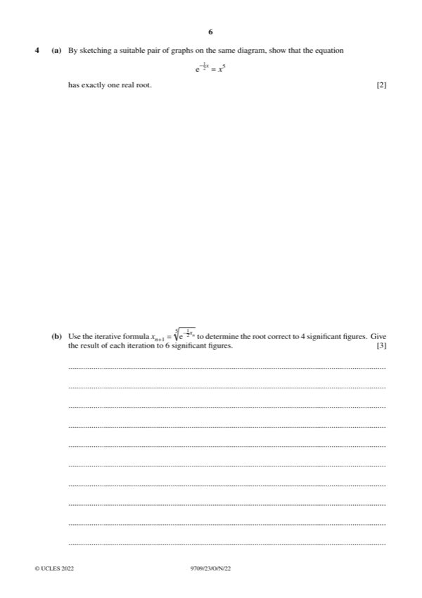
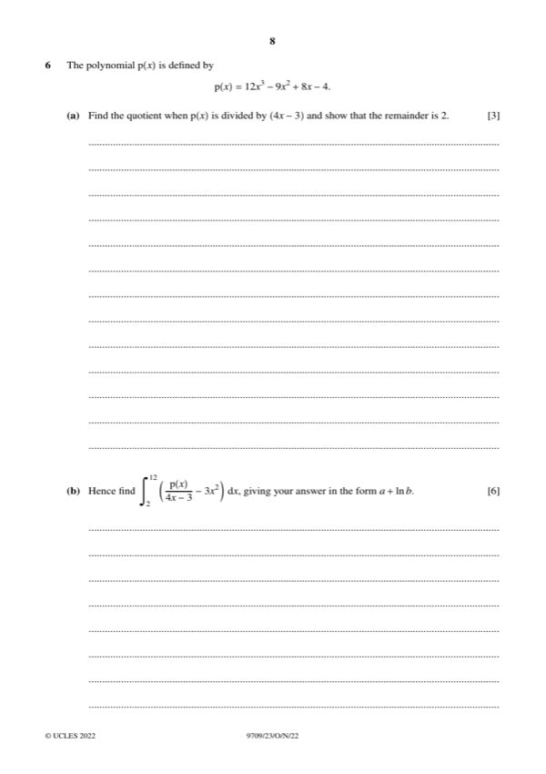
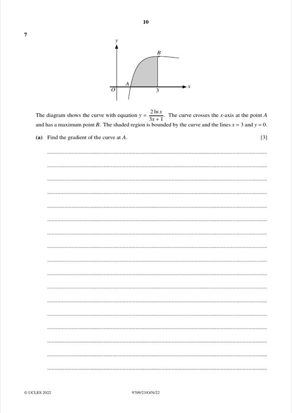
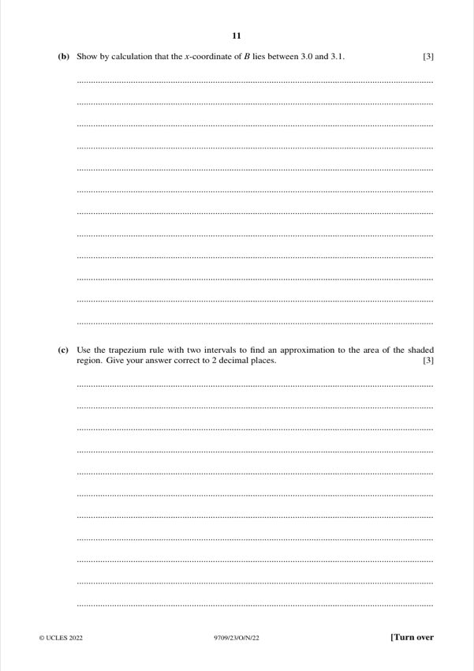
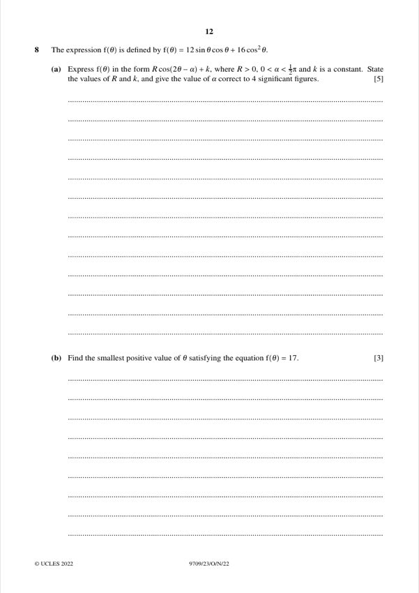
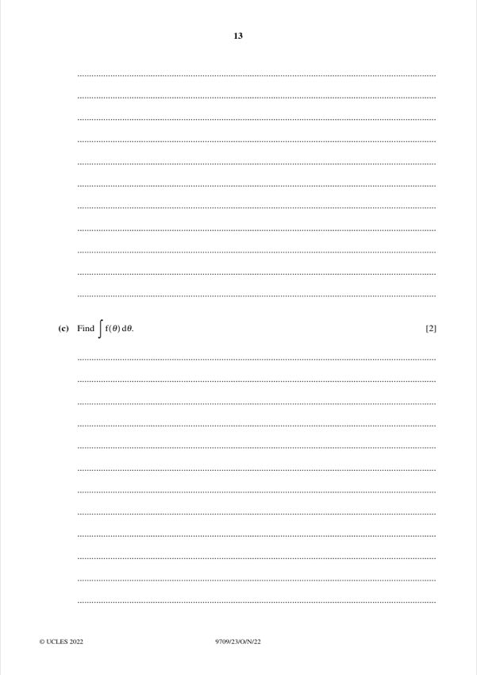

Question 4 [2 + 3]

Original paper page 6
(a) [2] By sketching a suitable pair of graphs, show that e⁻ˣ/² = x⁵ has exactly one real root.
y = e^(−x/2) is positive and decreasing; y = x⁵ is increasing and negative for x < 0.
They meet only once, for x > 0.
Exactly one real root.
(b) [3] Use x_(n+1) = (e^(−x_n/2))^(1/5) to find the root to 4 s.f. (6 s.f. for each iteration).
x₀ = 0.9
x₁ = 0.913931, x₂ = 0.912659, x₃ = 0.912773, x₄ = 0.912762, x₅ = 0.912763
x = 0.9128
Question 6 [3 + 6]

Original paper page 8
(a) [3] p(x) = 12x³ − 9x² + 8x − 4. Find the quotient when divided by (4x − 3) and show the remainder is 2.
12x³ − 9x² + 8x − 4 = (4x − 3)(3x² + 2) + 2
Quotient 3x² + 2, remainder 2
(b) [6] Hence find ∫₂¹² (p(x)/(4x − 3) − 3x²) dx in the form a + ln b.
p(x)/(4x − 3) − 3x² = 2 + 2/(4x − 3)
∫ = [2x + (1/2)ln(4x − 3)]₂¹²
= (24 + ½ln45) − (4 + ½ln5) = 20 + ½ln9 = 20 + ln3
a = 20, b = 3
Question 7 [3 + 3 + 3]

Original paper page 10
(a) [3] y = 2lnx/(3x + 1). The curve crosses the x-axis at A. Find the gradient at A.
A is (1, 0). dy/dx = [2(3x + 1)/x − 6lnx]/(3x + 1)²
At x = 1: (2·4)/16 = 1/2
Gradient at A = 1/2

Original paper page 11
(b) [3] Show by calculation that the x-coordinate of the maximum point B lies between 3.0 and 3.1.
At B: 2(3x + 1) − 6x lnx = 0. Let h(x) = 2(3x + 1) − 6x lnx
h(3.0) = 20 − 18ln3 = +0.225
h(3.1) = 20.6 − 18.6ln3.1 = −0.444
Sign change → x-coordinate of B in (3.0, 3.1)
Shown
(c) [3] Use the trapezium rule with two intervals to approximate the shaded area (between x = 1 and x = 3).
h = 1: y(1) = 0, y(2) = 2ln2/7 = 0.19804, y(3) = 2ln3/10 = 0.21972
Area ≈ ½[0 + 2(0.19804) + 0.21972] = 0.3079
Area ≈ 0.31
Question 8 [5 + 3 + 2]

Original paper page 12
(a) [5] f(θ) = 12sinθcosθ + 16cos²θ. Express as R cos(2θ − α) + k, with R > 0 and 0 < α < π/2.
f(θ) = 6sin2θ + 8cos2θ + 8
R = √(6² + 8²) = 10, with cosα = 0.8, sinα = 0.6 → α = 0.6435 rad
So f(θ) = 10cos(2θ − 0.6435) + 8
R = 10, k = 8, α = 0.6435
(b) [3] Find the smallest positive θ with f(θ) = 17.
10cos(2θ − 0.6435) = 9 → cos(2θ − 0.6435) = 0.9
2θ − 0.6435 = −0.4510 → 2θ = 0.1925 → θ = 0.0963
θ = 0.0963

Original paper page 13
(c) [2] Find ∫ f(θ) dθ.
∫(6sin2θ + 8cos2θ + 8) dθ = −3cos2θ + 4sin2θ + 8θ + c
−3cos2θ + 4sin2θ + 8θ + c